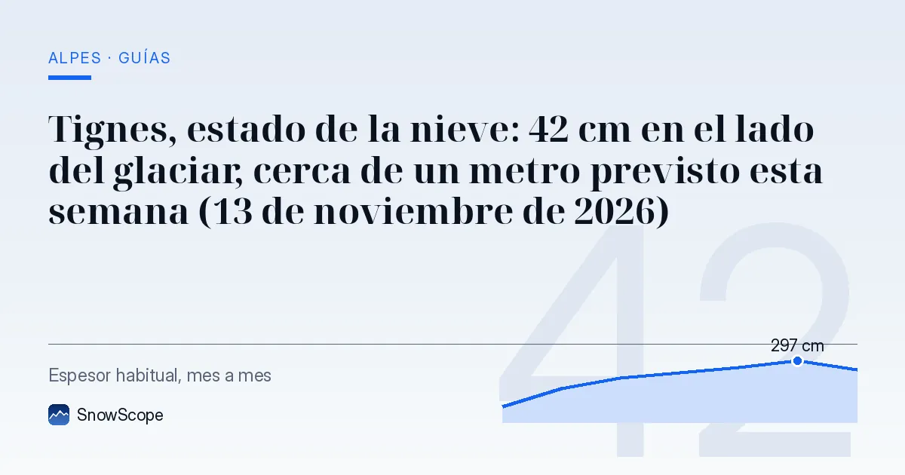

Tignes: nieve hoy
Tignes: nieve hoy. Quien busca el estado de la nieve en Tignes esta semana encuentra dos inviernos en una misma montaña. En el lado de la Grande …
Tignes, estado de la nieve: 42 cm en el lado del glaciar, cerca de un metro previsto esta semana (13 de noviembre de 2026)

Quien busca el estado de la nieve en Tignes esta semana encuentra dos inviernos en una misma montaña. En el lado de la Grande Motte, nuestra última actualización da 42 cm arriba de los remontes (3447 m). A 2503 m hay 12 cm, casi todos caídos en el último día. Abajo, a 1559 m, más o menos la altura de Les Brévières, el suelo sigue desnudo. La semana que viene puede cerrar esa brecha deprisa: se esperan 99 cm en la cima y 80 cm a 2503 m.
Lado del glaciar, pueblos del lago, valle
La parte alta del dominio es la que ya parece invierno. Tiene 42 cm después de 14 cm en las últimas 24 horas y 28 cm en la semana. Es el sector del glaciar, el que Tignes reserva para esquiar en otoño, y la nieve cae sobre hielo viejo y suelo frío: se queda.
Los pueblos del lago, Val Claret, Tignes le Lac y Le Lavachet, están a 2100 m, entre nuestras dos alturas bajas. A 2503 m contamos 12 cm, y los 12 cm caídos en el último día son toda la historia. A 1559 m no hay nada en el suelo y esta semana solo cayó un rastro. El resumen honesto es simple: blanco por encima de los lagos, a parches alrededor, verde por debajo.